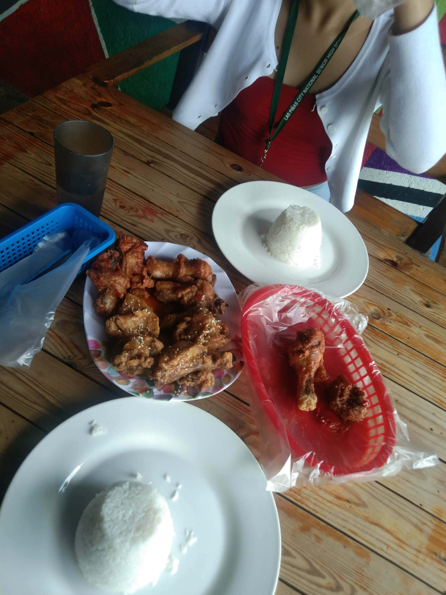

About Me
I am Louie Jee Enrique, a student who understands the importance of saving money while still enjoying good food.
I created Budget Eats Near TUP to help students find affordable and student-friendly places where they can enjoy a good meal without spending too much of their budget.

Why I Created This Guide
As a student, managing money can be difficult, especially when you need to balance food, transportation, school supplies, and other expenses. Because of this, finding affordable food near school can be very helpful.
This guide focuses on food places that can give students satisfying meals while keeping their spending reasonable.
Why Trust My Recommendations?
My recommendations are based on looking for food options that are affordable, filling, and suitable for students. I also consider the variety of meals available and whether the food can provide a good option for students on a limited budget.
The goal of this guide is not to say that these are the only good places to eat. Instead, it gives students a starting point when looking for budget-friendly food near TUP.